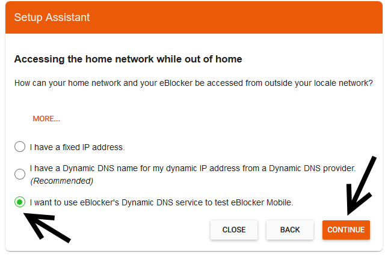
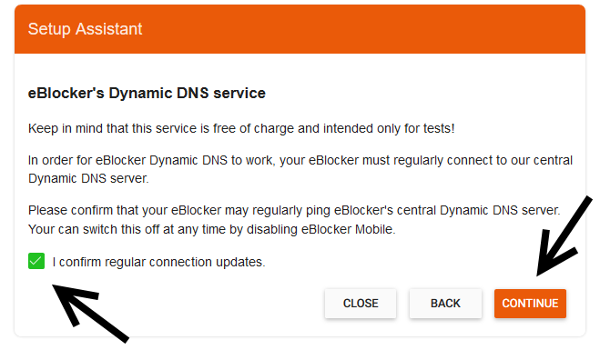
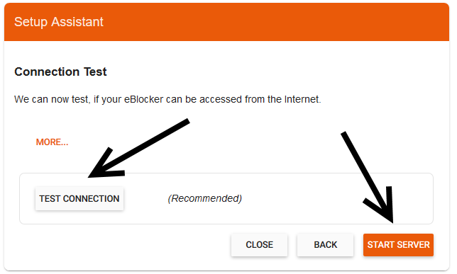
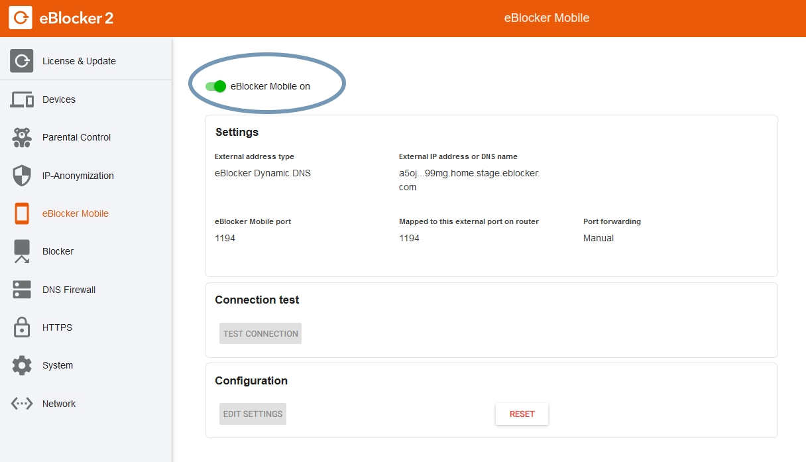
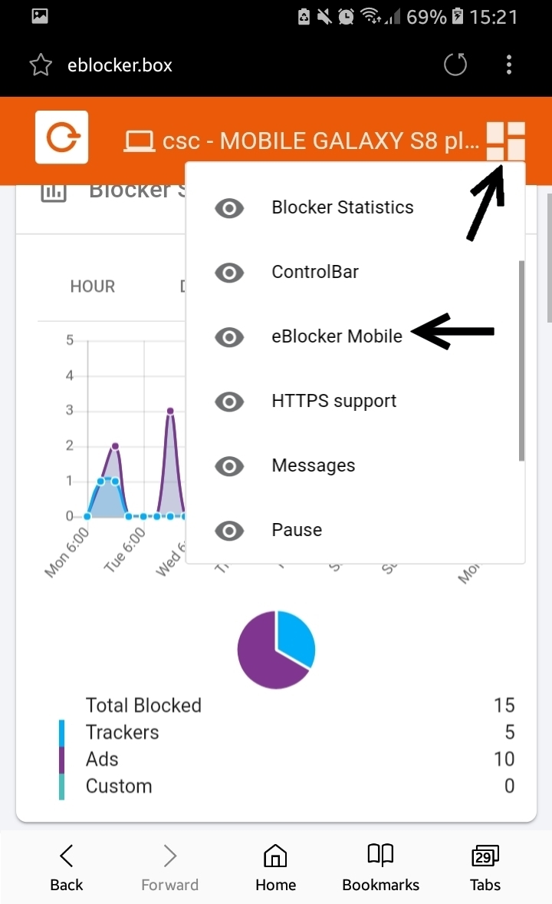
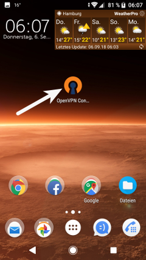
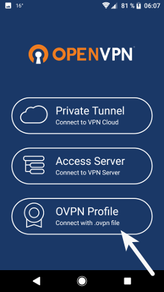
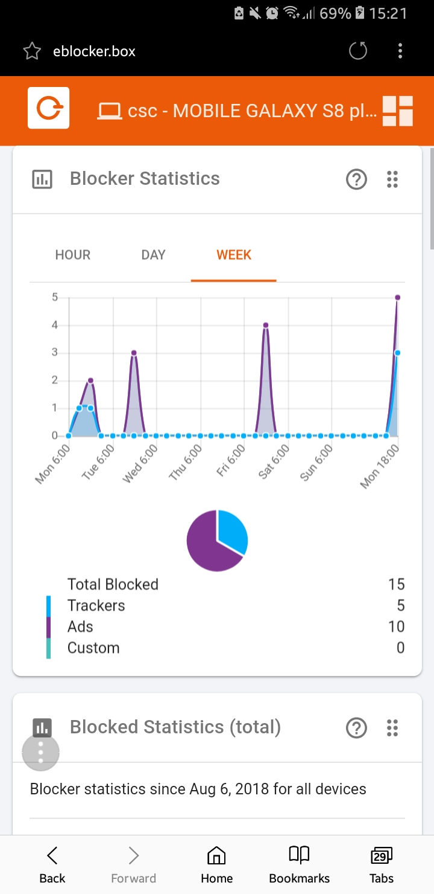

eBlocker Help > Knowledge Base > Use cases
In this manual, we show you how to set up port forwarding in your router and how to configure the eBlocker Mobile function. We then describe how to set up the function on a mobile device.
Important notice: Please note that after updating from eBlockerOS 1.x to 2.x, the transparent eBlockers (also known as pre-version eBlockers) are not yet compatible with the eBlocker Mobile function. We are currently working on a solution to this problem.
Caution: You should get an IPv4 connection from your Internet provider. eBlocker Mobile does not work with an IPv6 connection.
Caution: To use eBocker Mobile, the eBlocker DNS firewall must be enabled.
You can find instructions on the DNS firewall here: „eBlocker DNS Firewall“.
First forward port 1194 in your router to the eBlocker.
Caution: If you want to use the eBlocker Mobile feature, your eBlocker must be connected directly to your router.
Help on setting up port forwarding can be found here: „How do I set up port forwarding on the router?“
Note from support team: Assign a fixed IP address to your eBlocker.
Help can be found here: „Is it possible to assign a fixed IP address to the eBlocker?“
Please download an OpenVPN App to your mobile device so that you can connect to your eBlocker at home at any time while on the move.
A list of apps can be found here: „Where can I download a compatible OpenVPN app?“
For an Android smartphone, which we use in our example, download the app "OpenVPN Connect". Please make sure that your smartphone is in WLAN.
Open the eBlocker settings on your PC, laptop or other device (this can be accessed via the URL eblocker.box). In the "Settings" tab, click on "Open settings" and select the "eBlocker Mobile" menu item.
Caution: If you have already activated eBlocker Mobile before, first click on "RESET". Resetting an activated eBlocker Mobile configuration may take a few seconds.
Now click on "EDIT SETTINGS".
The eBlocker Mobile Assistant opens.
Click "CONTINUE".

Select "I want to use the eBlocker Dynamic DNS service to test eBlocker Mobile" and
click "CONTINUE".

Confirm the following dialog and click on "CONTINUE".

Since you have already assigned port 1194 to the eBlocker in the router settings as
described at the beginning of this manual, select "I will do the mapping of ports
myself" and click "CONTINUE".

Confirm in the following dialog that you have assigned port 1194 to the eBlocker in
your router and then click on "APPLY SETTINGS".

To be on the safe side, carry out a connection test in the following dialog.
After the successful test click on "START SERVER".

Caution: It can take up to 60 seconds before the server is started.
Then click "CLOSE".

In the eBlocker settings you can now see that eBlocker Mobile is turned on.

On your mobile device, call setup.eblocker.com or eblocker.box in your browser.
In the device list look up your current device and choose the "MOBILE" tab. There you will have to activate the mobile function per device.

Now you might turn to the Dashboard and click on the dashboard icon in the upper right corner and check if the eBlocker Mobile card is displayed. If this is not the case, click on "eBlocker Mobile" in the list.

Scroll down the dashboard to the eBLocker Mobile card. The eBlocker recognizes your mobile device and suggests "Android" in the list. If this is not the case, please make your own selection.
Click "DOWNLOAD CONFIGURATION" to save the eBlocker OpenVPN configuration to your smartphone.

Now open the OpenVPN app on your smartphone and select "OVPN Profile" in the app.
 
Select the downloaded eBlocker OpenVPN configuration and click on "IMPORT".

The OpenVPN configuration of the eBlocker is now imported and can be added to the profiles with "ADD".

Now activate the connection in the OpenVPN App.

On the smartphone, the VPN connection is displayed with a key (the display may vary depending on the operating system).

Please deactivate the WLAN connection on your smartphone now.
Enter the address setup.eBlocker.com or eblocker.box in a smartphone browser. The displayed eBlocker Dashboard indicates that you are now enjoying the full protection of the eBlocker on the move. Congratulations!

If you have any problems with the setup, please read the following tips: „Troubleshooting“.